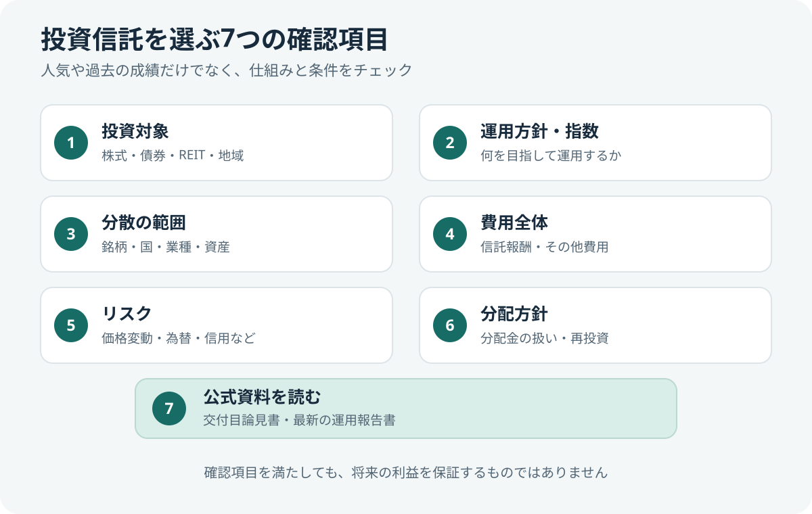
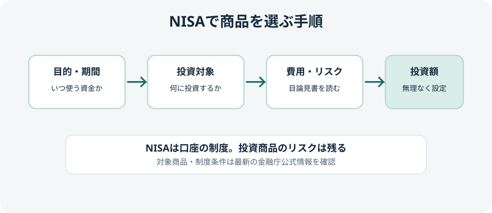

NISAでの投資信託選び7つのチェックポイント
NISA口座では、対象となる投資信託の利益が非課税になる一方、商品選びを間違えても損失が補償されるわけではありません。人気ランキングや過去の成績だけで決めず、投資対象・コスト・リスク・運用方針を確認しましょう。

- 何に投資する商品か
- どの指数・運用方針を目指すか
- 投資先や地域がどれだけ分散されているか
- 信託報酬など保有中のコスト
- 購入時・換金時の費用やその他のコスト
- 価格変動・為替などのリスク
- 交付目論見書と最新の運用報告書

1. 何に投資する商品か
投資信託は商品によって投資対象が異なります。国内株式、海外株式、債券、不動産投資信託（REIT）、複数資産を組み合わせたものなどがあり、投資対象によって値動きや想定されるリスクも変わります。
「全世界株式」「米国株式」「国内債券」などの名称だけで判断せず、目論見書で投資対象地域、資産の種類、為替ヘッジの有無、主要な投資制限を確認しましょう。株式中心の商品は値上がりを期待できる一方、大きく値下がりする局面もあります。
2. 指数と運用方針を確認する
インデックスファンドは、日経平均株価やTOPIX、海外株式指数など、特定の指数への連動を目指す商品です。アクティブファンドは、運用者の判断によって指数を上回る成果などを目指します。どちらが必ず優れているというものではありません。
指数連動型を比較する場合も、同じ指数を対象としているかを確認してください。名称が似ていても、対象地域や組み入れ銘柄、指数の計算方法が異なることがあります。アクティブファンドでは、運用方針と比較対象となるベンチマークを理解することが重要です。全世界株式型とS&P 500型の地域分散や集中度の違いは、比較記事で確認できます。
3. 分散の範囲を確認する
保有銘柄数が多くても、特定の国・業種・大型企業に資産が偏っている場合があります。投資信託の中身や組入比率を確認し、すでに持っている商品と投資先が重複していないかも考えましょう。
複数の商品を買えば自動的に十分な分散になるわけではありません。例えば、投資対象が似た株式指数のファンドを複数保有しても、リスク分散の効果が限定的な場合があります。分散は損失を完全に防ぐものでもありません。
4. 信託報酬だけでなくコスト全体を見る
信託報酬は、保有中に運用管理などのためにかかる費用です。長期間保有する場合、費用の差が運用成果に影響する可能性があります。ただし、コストが低いという理由だけで、投資対象やリスクを無視して選ぶのは適切ではありません。
| 確認する費用 | 見るポイント |
|---|---|
| 購入時手数料 | 購入時に費用がかかるか。販売会社の条件も確認する |
| 信託報酬（運用管理費用） | 保有中に継続してかかる費用。料率の表示単位や税込・税抜を確認する |
| その他の費用 | 監査費用、売買委託手数料など。運用状況によって変動する場合がある |
| 信託財産留保額など | 換金時に差し引かれる費用があるか |
目論見書に記載された信託報酬だけでは、実際に発生する費用のすべてを把握できないことがあります。運用報告書などで実質的な費用も確認し、同じ投資対象・運用方針の商品同士で比較しましょう。
5. リスクを投資期間と照らし合わせる
確認したいリスクには、株価や債券価格の変動、金利変動、為替変動、信用リスク、流動性リスクなどがあります。海外資産を含む商品は、現地通貨での価格が変わらなくても円高・円安によって円換算の評価額が変わることがあります。
いつ使う予定のお金なのか、評価額が大きく下がっても保有を続けられるかを考えてください。近い将来に使う生活費や緊急予備資金まで投資に回すことは避け、無理のない金額を検討しましょう。
6. 分配金の方針を確認する
投資信託によって、分配金を支払う方針や頻度は異なります。分配金が支払われると、その分だけファンドの純資産が減るため、分配金の多さだけで運用成果を判断することはできません。また、分配金には運用収益以外を原資とするものが含まれる場合があります。
資産を長期的に増やすことが目的なら、分配方針や分配金の再投資方法が自分の計画に合うかを確認しましょう。分配金の有無だけで商品を評価しないことが大切です。
7. 交付目論見書と運用報告書を読む
購入前には、販売会社や運用会社が提供する最新の交付目論見書を確認しましょう。特に次の項目をチェックすると、商品の特徴を把握しやすくなります。
- ファンドの目的・特色と投資対象
- 投資リスクと基準価額の変動要因
- 購入・換金の条件、申込受付不可日など
- 手数料・信託報酬・その他費用
- 分配方針と過去の運用実績
運用報告書では、運用状況や費用、組入資産などを確認できます。ただし、過去の運用実績は将来の成果を保証するものではありません。古いランキングやSNSの評判より、最新の公式資料を優先しましょう。
NISA対象商品かどうかも確認する
投資信託であればすべてNISAで購入できるわけではありません。つみたて投資枠と成長投資枠では対象商品などの条件が異なります。また、金融機関によって取り扱い商品が違う場合があります。金融庁の対象商品一覧と、利用する金融機関の商品ページの両方を確認してください。
購入前チェックリスト
- 何に投資する商品か、説明できる
- 指数・運用方針と投資対象の違いを理解した
- 地域・業種・銘柄の偏りや、保有商品の重複を確認した
- 信託報酬だけでなく、その他費用も比較した
- 価格変動や為替変動を受け入れられるか考えた
- 分配方針が自分の目的に合っている
- 最新の交付目論見書と運用報告書を確認した
- NISAの対象枠で購入できることを確認した
公式情報・参考資料
- 金融庁：資産形成の基本 — 長期・積立・分散投資と金融商品の基本
- 金融庁：NISA特設ウェブサイト 資料コーナー — NISAガイドブックや制度資料
- J-FLEC：投資信託の選び方のポイントは？ — 投資対象と運用方法の確認
- J-FLEC：投資信託の目論見書を見るポイントは？ — 運用方法、リスク、実績、コスト
- 資産運用業協会：目論見書 — 交付目論見書の役割と記載内容
まとめ
NISAで投資信託を選ぶときは、非課税メリットや人気だけではなく、投資対象、運用方針、分散、費用、リスク、分配方針を確認しましょう。自分の目的や投資期間に合うかを考え、わからない点が残る商品は、内容を理解してから判断することが大切です。